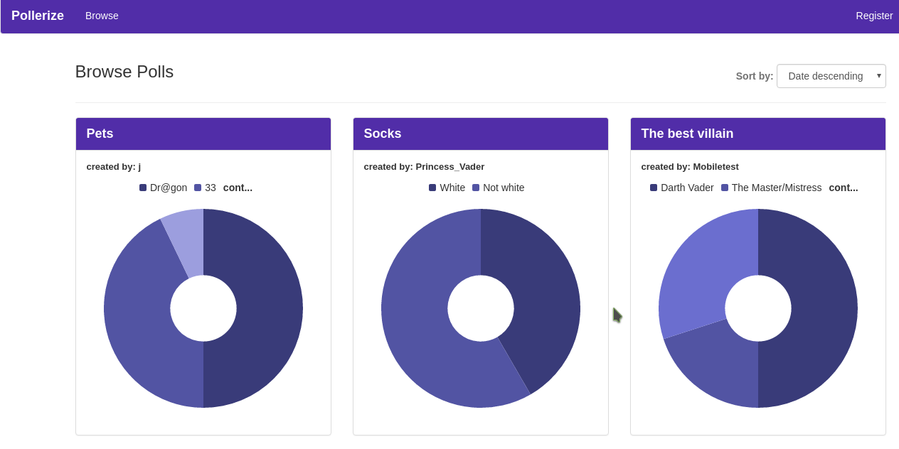

Pollerize - Voting App
Description
Overview:
Pollerize was the first full-stack application that I built using the MERN stack (MongoDB, Express JS, React JS, and Node JS). Besides the basic MERN stack, I used React-Router for all page routes, Heroku to deploy the live application, and Passport JS for authentication.
When serving the application, I used React's isomorphic rendering to serve a SPA (single page application) with multiple views for voting, managing the account, viewing all polls, etc.
My biggest takeaway from creating Pollerize was that planning out your application from the very beginning is immensely helpful in ensuring that the final product is a cohesive whole. While there are still some minor issues with the implementation, I feel that this project really helped in developing my understanding of a full stack development.
See live appSee the code